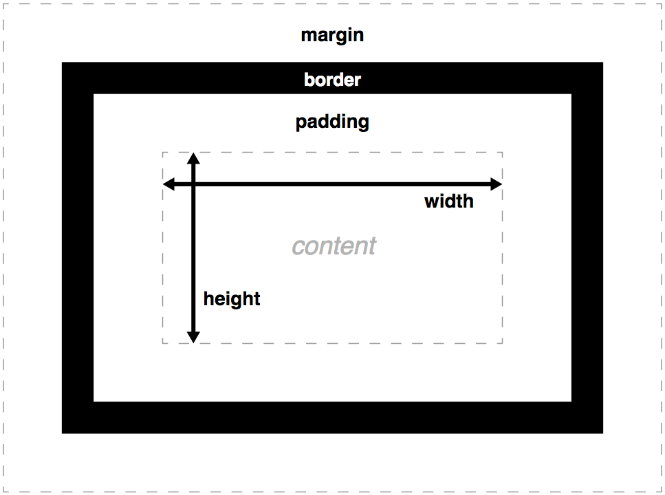

<!doctype html>
<html>
	<head>
		<meta charset="utf-8">
		<meta name="viewport" content="width=device-width, initial-scale=1.0, maximum-scale=1.0, user-scalable=no">

		<title>reveal.js</title>

		<link rel="stylesheet" href="css/reveal.css">
		<link rel="stylesheet" href="css/theme/night.css">

		<!-- Theme used for syntax highlighting of code -->
		<link rel="stylesheet" href="lib/css/zenburn.css">

		<!-- Printing and PDF exports -->
		<script>
			var link = document.createElement( 'link' );
			link.rel = 'stylesheet';
			link.type = 'text/css';
			link.href = window.location.search.match( /print-pdf/gi ) ? 'css/print/pdf.css' : 'css/print/paper.css';
			document.getElementsByTagName( 'head' )[0].appendChild( link );
		</script>
	</head>
	<body>
		<div class="reveal">
			<div class="slides">
				<section data-background-image="img/css3_logo.jpg">
					<h3 style="margin-top:55%;background-color:rgba(0,0,0,:0.5);">& Drupal 8</h3>
					<p><small>Created by <a href="https://www.facebook.com/chaux.cedric">Chaux Cedric</a> using <a href="https://revealjs.co://revealjs.com">reveal.js</a></small></p>

				</section>
				<section >
					<section data-background-image="img/css_real.jpg"><h1>Introduction to CSS</h1>
						<p><small>Cascading Style Sheet</small></p>
					</section>
					<section data-background-image="img/building.jpg">
						<h3>First :  HTML Elements</h3>
					</section>
					<section data-background-image="img/xray.jpg">
						<h3>Drupal 8 markup Page Structure : Bartik theme</h3>
							<pre><code data-trim>
							html body
							<head>
								<link rel="stylesheet" href=""/>
							</head>
							<body>
							<header><nav></nav></header>
							<main><sections>
							<articles><aside></aside></articles>
							section /section
							</main>
							<div></div>
							<sidebar></sidebar>
							<footer></footer>
							 /body /html
							</code></pre>
					</section>
					<section>
						<h3>Basic Elements </h3>
							<pre><code> IMG A  H1 H2 H3 SPAN </code></pre> 
							<pre><code> FORM INPUT SUBMIT BUTTON</code></pre> 
					</section>
					<section>
					    <h3>Table Code</h3>
						<pre>
							<code data-trim >
								<table>
									<tbody>
										<tr>
											<th>Firstname</th>
											<th>Lastname</th>
										</tr>
										<tr>
											<td>Peter</td>
											<td>Griffin</td>
										</tr>
										<tr>
											<td>Lois</td>
											<td>Griffin</td>
										</tr>
									</tbody>
								</table>
							</code>
						</pre>
					</section>
					<section>
						<h3>Table Demo</h3>
						<table>
							<tbody>
								<tr>
									<th>Firstname</th>
									<th>Lastname</th>
								</tr>
								<tr>
									<td>Peter</td>
									<td>Griffin</td>
								</tr>
								<tr>
									<td>Lois</td>
									<td>Griffin</td>
								</tr>
							</tbody>
						</table>
					</section>
				</section>
				<section>
					<section data-background-image="img/css_plan.jpg">
						<h1>Back to CSS</h1>
					</section>
					<section>
						<h3>Basic</h3>
						<pre>
						<code<>
			selector {
			  property: value;
			  }
						</code>
						</pre>
					</section>
					<section>
						<h3>Priority</h3>
						<ul>
							<li>1 Inline Style ( DIV style="csspropery:value" )</li>
							<li>2 CSS files : !important, most precise & last one</li>
							<li>3 Browser defaults</li>
						</ul>
					</section>
					<section >
						<h3>CSS Box Model</h3>
						
					</section>

					<section >
						<h3>CSS Box Model Example</h3>
						<pre>
						<code<>
			div {
			    width: 320px;
			    padding: 10px;
			    padding-left:10px;
			    border: 5px solid gray;
			    margin: 0 0 0 0 ; 
			}

						</code>
						</pre>
					</section>


					<section >
						<h3>Other Properties</h3>
						<pre>
						<code<>
			div {
			    font:font:italic bold 12px/30px Georgia, serif;
			    font-color:red;
			    background-color: 10px;
			    background-image: :url("relative,or absolute");
			    background-repeat ;
			    background-position;
			    color:pink / RGB(0.0.0);
			    border: 5px solid gray;
			    margin: 0 0 0 0 ; 
			    display:none/inline/float;
			    z-index:-9999999-1000000
			}

					</code>
					</pre>
				</section>
				<section >
					<h3>UNITS</h3>
					<p><strong>Relative</strong>   em , rem , %</p>
					<p><strong>Absolute</strong> px </p>
				</section>
				<section>
					<h3>Selectors</h3>
					<ul>
						<li>elements : a , div , span etc ... </li>
						<li> class: .class</li>
						<li>id : #id</li>
						<li>div p : select p inside div</li>
						<li> div> p select p with parent div </li>
						<li> div +p select p placed after div </li>
						<lii>* all </lii>
						<li>[attribute="value"]</li>
						<li>:Pseudo class :first a:hover  </li>
					</ul>
				</section>
				<section>
					<h3>CSS TIPS</h3>
					<p>Your Browser developer tool is your friend </p>
					<p>clear your browser cache ( control + f5 )</p>
					<p> check compatibility and test</p>
					<p>Comments your css</p>
					<pre><code>

/*
* — Minor Section Heading —
*/
				        </code></pre>
				</section>
				</section>
				<section>
					<section data-background-image="img/drupal.png" >
						<h1>CSS & </h1>
						<p>Who said it was easy </p>
					</section>
					<section>
						<h3>Cache</h3>
						<p>disable css aggregation in configuration>performance menu</p>
						<p>Disable caching with development environment configuration file </p>
						<p><a href="https://www.drupal.org/node/2598914">tutorial</a></p>
						<p>clear cache in admin configuration performance</p>
					</section>
					   <section>
						<h3>Getting a theme </h3>
						<p>Now you can install a new themes</p>
						<p>Or you can install a subtheme from a BaseTheme</p>
					   </section>
					   <section>
					   	<h3>Theme Location</h3>
					   	<pre>
						<code>
  |-core
  |  |-modules
  |  |-themes
  |  |  |-bartik
  |  |  |-seven
  ..
  |-modules
  |-themes
  |  |-contrib
  |  |  |-zen
  |  |  |-basic
  |  |  |-bluemarine
  |  |-custom
  |  |  |-fluffiness
						</code>
						</pre>
					   </section>
					   <section>
					   	<h3>Theme Structure</h3>
					   	<pre>
						<code>
  |-fluffiness.breakpoints.yml
  |-fluffiness.info.yml
  |-fluffiness.libraries.yml
  |-fluffiness.theme
  |-config
  |  |-install
  |  |  |-fluffiness.settings.yml
  |  |-schema
  |  |  |-fluffiness.schema.yml
  |-css
  |  |-style.css
  |-images
  |  |-buttons.png
  |-logo.svg
  |-screenshot.png
						</code>
						</pre>
					   </section>
					   <section>
						   <h3>CSS File Structure</h3>
						   <p>The structure of files is based on SMACS & BEM</p>
						   <p>Components have their own CSS files , layout.css is separated</p>
						   <p>Base. is to harmonize default value accross browsers</p>
						   <p>layout.css is the whole page layout</p>
						   <p>Do not touch those</p>
						   <p>Modify or edit the right css file in componenets or <a href="https://www.drupal.org/docs/8/theming-drupal-8/adding-stylesheets-css-and-javascript-js-to-a-drupal-8-theme">create one</a></p>
					   </section>
				   </section>
                                   <section>
                                   	<h4>LINKS</h4>
                                   	<p><a href="https://www.w3schools.com/">w3schools</a></p>
                                   	 <p><a href="https://github.com/nco71">This presentation</a></p>
                                   	<p><a href="https://www.drupal.org/node/2165673">Create a Subtheme</a></p>
                                   	<p><a href="https://www.drupal.org/project/project_theme?f%5B0%5D=&f%5B1%5D=&f%5B2%5D=drupal_core%3A7234&f%5B3%5D=sm_field_project_type%3Afull&f%5B4%5D=&text=&solrsort=iss_project_release_usage+desc&op=Search">d8 themes</a></p>
                                   	<p><a href="https://www.drupal.org/docs/8/theming">d8 theming page</a></p>
                                   	<p><a href="https://www.drupal.org/node/1887918#separate-concern://www.drupal.org/node/1887918#separate-concerns">CSS architecture</a></p>
					<p><a href="https://www.drupal.org/docs/develop/standards/css/css-formatting-guidelines">Formating</a></p>
                                   </section>
			</div>
		</div>

		<script src="lib/js/head.min.js"></script>
		<script src="js/reveal.js"></script>

		<script>
			// More info about config & dependencies:
			// - https://github.com/hakimel/reveal.js#configuration
			// - https://github.com/hakimel/reveal.js#dependencies
			Reveal.initialize({
				dependencies: [
					{ src: 'plugin/markdown/marked.js' },
					{ src: 'plugin/markdown/markdown.js' },
					{ src: 'plugin/notes/notes.js', async: true },
					{ src: 'plugin/highlight/highlight.js', async: true, callback: function() { hljs.initHighlightingOnLoad(); } }
				]
			});
		</script>
	</body>
</html>
